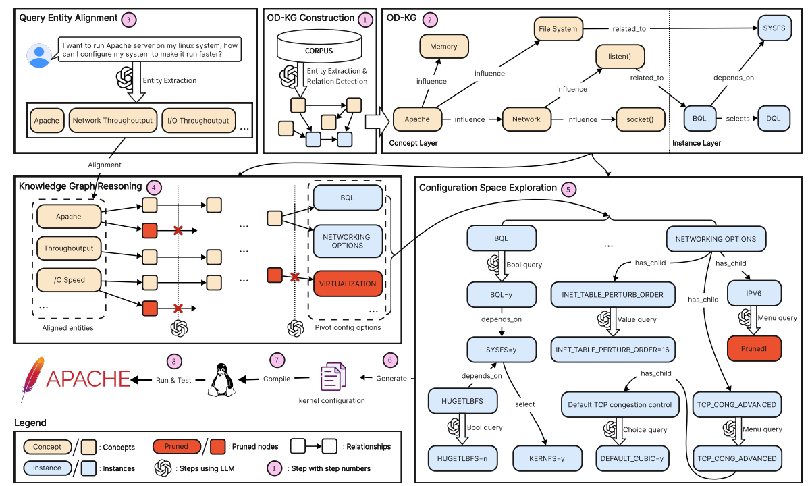

Kernel configurations play an important role in the performance of Operating System (OS). However, with the rapid iteration of OS, finding the proper configurations that meet specific requirements can be challenging, which can be primarily attributed to the default kernel provided by vendors does not take the requirements of specific workloads into account, and the heavyweight tuning process cannot catch up with the rapid evolving pace of the kernel. To address these challenges, we propose BYOS, a novel framework powered by Large Language Models (LLMs) to customize kernel configurations for diverse user requirements. By integrating OS-oriented Dual-layer Knowledge Graph (OD-KG) and corresponding reasoning strategy, BYOS enhanced the LLM’s understanding of the characteristics and capabilities of OS, thus enabling customized, cost-effective, and convenient generation of kernel configurations. Experiments show that the kernels configured by BYOS outperform the default vendor-configured kernels by 7.1% to 155.4%, demonstrating the effectiveness and efficiency of BYOS in customizing kernel configurations.

BYOS first builds the OD-KG by integrating Kconfig and the corpus, then extracts and aligns entities from the user goal to infer key configuration options.